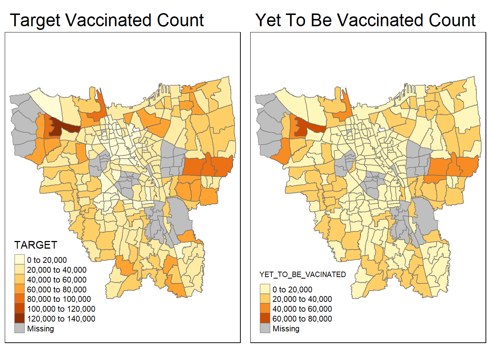
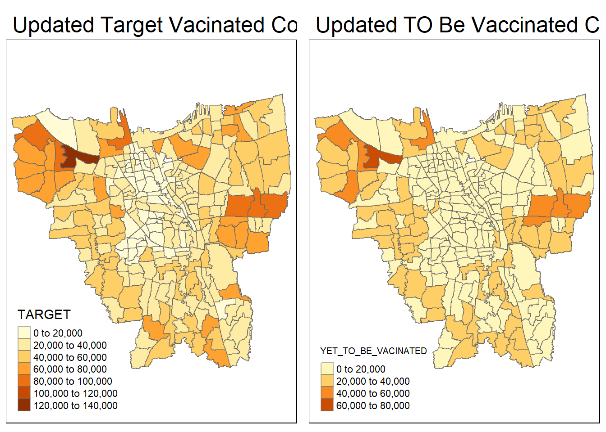
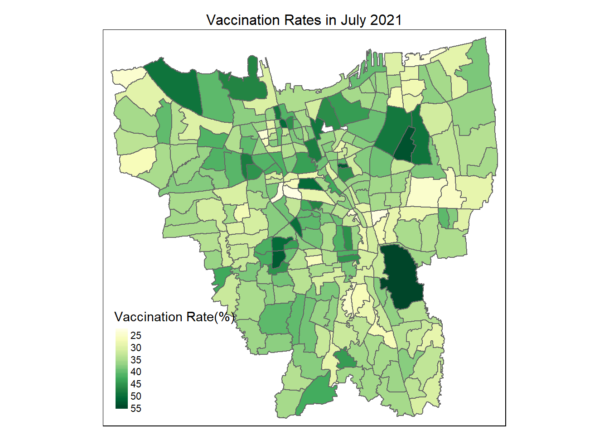
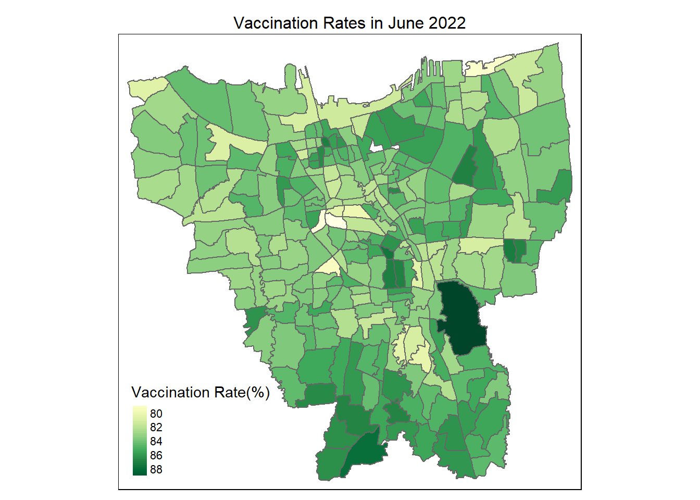
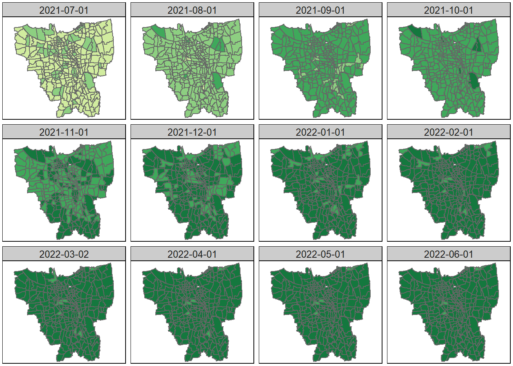
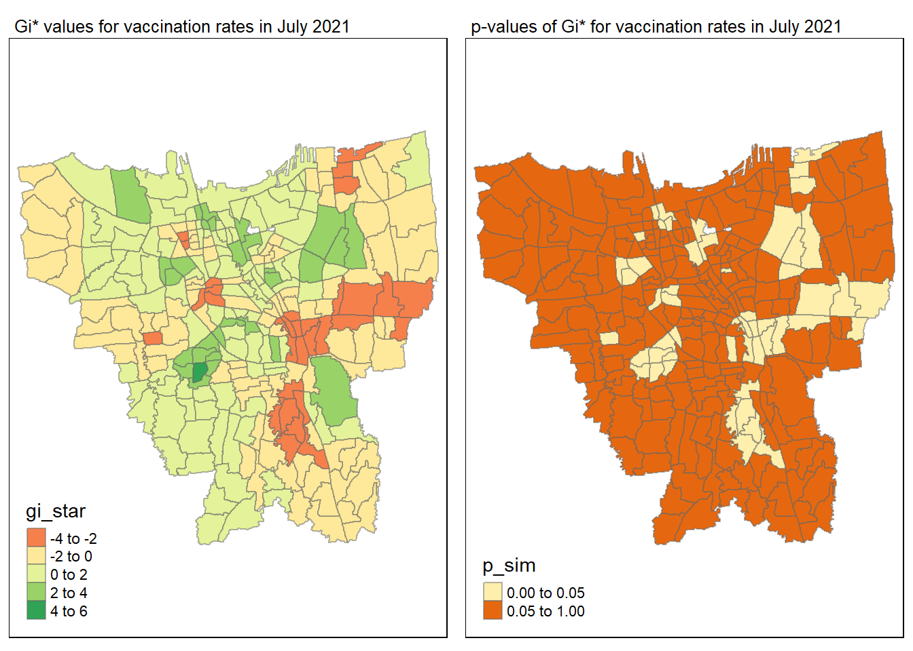
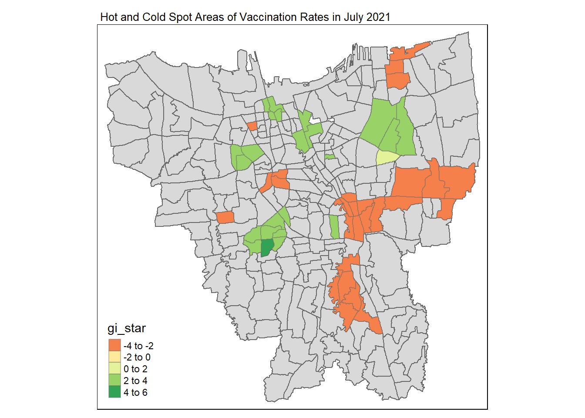
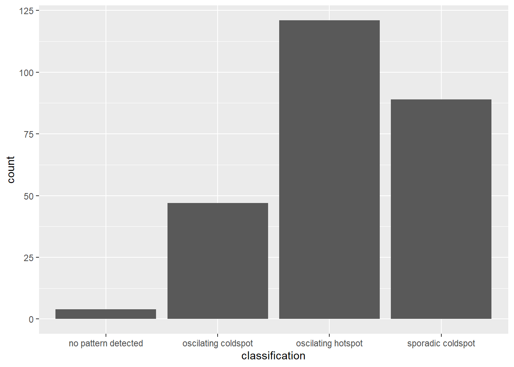
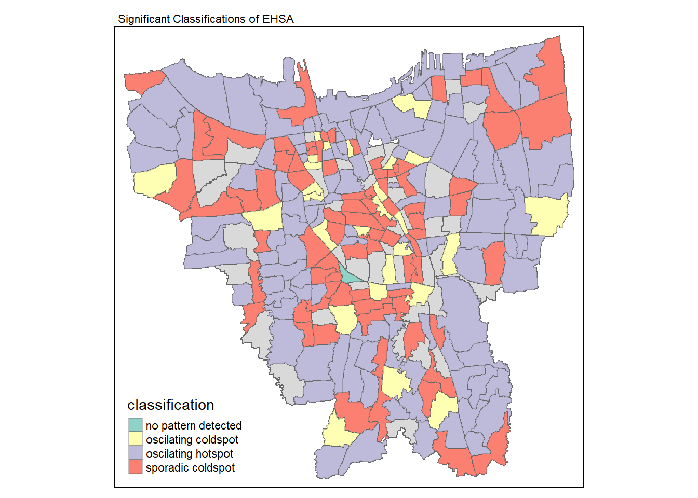

Code
pacman::p_load(sf, tmap, plotly, sfdep, readxl, kendall, tidyverse)Hello! This is Rhonda Ho’s take-home Assignment 2 for IS415 module.
To view/hide all the code at once, please click on the “</> code” tab beside the title of this html document and select the option to view/hide the code.
The full details of this assignment can be found here.
Exploratory Spatial Data Analysis (ESDA) hold tremendous potential to address complex problems facing society. In this study, you are tasked to apply appropriate Local Indicators of Spatial Association (LISA) and Emerging Hot Spot Analysis (EHSA) to undercover the spatio-temporal trends of COVID-19 vaccination in DKI Jakarta.
For the purpose of this assignment, data from Riwayat File Vaksinasi DKI Jakarta will be used. Daily vaccination data are provided. We are only required to download either the first day of the month or last day of the month of the study period.
For the purpose of this study, DKI Jakarta administration boundary 2019 will be used. The data set can be downloaded at Indonesia Geospatial portal, specifically at this page.
The specific tasks of this take-home exercise are as follows:
Choropleth Mapping and Analysis
Compute the monthly vaccination rate from July 2021 to June 2022 at sub-district (also known as kelurahan in Bahasa Indonesia) level,
Prepare the monthly vaccination rate maps by using appropriate tmap functions,
Describe the spatial patterns revealed by the choropleth maps (not more than 200 words).
Local Gi* Analysis
With reference to the vaccination rate maps prepared in ESDA:
Compute local Gi* values of the monthly vaccination rate,
Display the Gi* maps of the monthly vaccination rate. The maps should only display the significant (i.e. p-value < 0.05)
With reference to the analysis results, draw statistical conclusions (not more than 250 words).
Emerging Hot Spot Analysis(EHSA)
With reference to the local Gi* values of the vaccination rate maps prepared in the previous section:
Perform Mann-Kendall Test by using the spatio-temporal local Gi* values,
Select three sub-districts and describe the temporal trends revealed (not more than 250 words), and
Prepared a EHSA map of the Gi* values of vaccination rate. The maps should only display the significant (i.e. p-value < 0.05).
With reference to the EHSA map prepared, describe the spatial patterns revealed. (not more than 250 words).
The following packages will be used:
sf: to import, manage, and process geospatial data
tmap: provides functions for plotting cartographic quality static point patterns maps or interactive maps
plotly: for creating interactive web-based graphs
sfdep: for spatial dependence of simple features
readxl: to import Excel worksheets(.xlsx)
Kendall: for Mann-Kendall Test
tidyverse: a collection of packages for data science tasks
pacman::p_load(sf, tmap, plotly, sfdep, readxl, kendall, tidyverse)jkt2019 <- st_read(dsn = "data/geospatial",
layer = "BATAS_DESA_DESEMBER_2019_DUKCAPIL_DKI_JAKARTA") Reading layer `BATAS_DESA_DESEMBER_2019_DUKCAPIL_DKI_JAKARTA' from data source
`C:\RhondaHO\IS415-GAA\Take-home_Assgn\Take-home_Assgn2\data\geospatial'
using driver `ESRI Shapefile'
Simple feature collection with 269 features and 161 fields
Geometry type: MULTIPOLYGON
Dimension: XY
Bounding box: xmin: 106.3831 ymin: -6.370815 xmax: 106.9728 ymax: -5.184322
Geodetic CRS: WGS 84From the output, we can observe that:
Geometry type is MULTIPOLYGON
CRS information is WGS 84 instead of the CRS for Indonesia, Jakarta.
glimpse(jkt2019)Rows: 269
Columns: 162
$ OBJECT_ID <dbl> 25477, 25478, 25397, 25400, 25378, 25379, 25390, 25382, 253…
$ KODE_DESA <chr> "3173031006", "3173031007", "3171031003", "3171031006", "31…
$ DESA <chr> "KEAGUNGAN", "GLODOK", "HARAPAN MULIA", "CEMPAKA BARU", "PU…
$ KODE <dbl> 317303, 317303, 317103, 317103, 310101, 310101, 317102, 310…
$ PROVINSI <chr> "DKI JAKARTA", "DKI JAKARTA", "DKI JAKARTA", "DKI JAKARTA",…
$ KAB_KOTA <chr> "JAKARTA BARAT", "JAKARTA BARAT", "JAKARTA PUSAT", "JAKARTA…
$ KECAMATAN <chr> "TAMAN SARI", "TAMAN SARI", "KEMAYORAN", "KEMAYORAN", "KEPU…
$ DESA_KELUR <chr> "KEAGUNGAN", "GLODOK", "HARAPAN MULIA", "CEMPAKA BARU", "PU…
$ JUMLAH_PEN <dbl> 21609, 9069, 29085, 41913, 6947, 7059, 15793, 5891, 33383, …
$ JUMLAH_KK <dbl> 7255, 3273, 9217, 13766, 2026, 2056, 5599, 1658, 11276, 128…
$ LUAS_WILAY <dbl> 0.36, 0.37, 0.53, 0.97, 0.93, 0.95, 1.76, 1.14, 0.47, 1.31,…
$ KEPADATAN <dbl> 60504, 24527, 54465, 42993, 7497, 7401, 8971, 5156, 71628, …
$ PERPINDAHA <dbl> 102, 25, 131, 170, 17, 26, 58, 13, 113, 178, 13, 87, 56, 12…
$ JUMLAH_MEN <dbl> 68, 52, 104, 151, 14, 32, 36, 10, 60, 92, 5, 83, 21, 70, 93…
$ PERUBAHAN <dbl> 20464, 8724, 27497, 38323, 6853, 6993, 15006, 5807, 31014, …
$ WAJIB_KTP <dbl> 16027, 7375, 20926, 30264, 4775, 4812, 12559, 3989, 24784, …
$ SILAM <dbl> 15735, 1842, 26328, 36813, 6941, 7057, 7401, 5891, 23057, 2…
$ KRISTEN <dbl> 2042, 2041, 1710, 3392, 6, 0, 3696, 0, 4058, 5130, 1, 3061,…
$ KHATOLIK <dbl> 927, 1460, 531, 1082, 0, 0, 1602, 0, 2100, 2575, 0, 1838, 7…
$ HINDU <dbl> 15, 9, 42, 127, 0, 0, 622, 0, 25, 27, 0, 9, 115, 47, 382, 7…
$ BUDHA <dbl> 2888, 3716, 469, 495, 0, 2, 2462, 0, 4134, 4740, 5, 1559, 3…
$ KONGHUCU <dbl> 2, 1, 5, 1, 0, 0, 10, 0, 9, 10, 0, 4, 1, 1, 4, 0, 2, 0, 0, …
$ KEPERCAYAA <dbl> 0, 0, 0, 3, 0, 0, 0, 0, 0, 0, 0, 2, 0, 22, 0, 3, 3, 0, 0, 0…
$ PRIA <dbl> 11049, 4404, 14696, 21063, 3547, 3551, 7833, 2954, 16887, 1…
$ WANITA <dbl> 10560, 4665, 14389, 20850, 3400, 3508, 7960, 2937, 16496, 1…
$ BELUM_KAWI <dbl> 10193, 4240, 14022, 20336, 3366, 3334, 7578, 2836, 15860, 1…
$ KAWIN <dbl> 10652, 4364, 13450, 19487, 3224, 3404, 7321, 2791, 15945, 1…
$ CERAI_HIDU <dbl> 255, 136, 430, 523, 101, 80, 217, 44, 381, 476, 39, 305, 10…
$ CERAI_MATI <dbl> 509, 329, 1183, 1567, 256, 241, 677, 220, 1197, 993, 79, 90…
$ U0 <dbl> 1572, 438, 2232, 3092, 640, 648, 802, 585, 2220, 2399, 376,…
$ U5 <dbl> 1751, 545, 2515, 3657, 645, 684, 995, 588, 2687, 2953, 331,…
$ U10 <dbl> 1703, 524, 2461, 3501, 620, 630, 1016, 513, 2653, 2754, 309…
$ U15 <dbl> 1493, 521, 2318, 3486, 669, 671, 1106, 548, 2549, 2666, 328…
$ U20 <dbl> 1542, 543, 2113, 3098, 619, 609, 1081, 491, 2313, 2515, 290…
$ U25 <dbl> 1665, 628, 2170, 3024, 639, 582, 1002, 523, 2446, 2725, 325…
$ U30 <dbl> 1819, 691, 2363, 3188, 564, 592, 1236, 478, 2735, 3122, 329…
$ U35 <dbl> 1932, 782, 2595, 3662, 590, 572, 1422, 504, 3034, 3385, 317…
$ U40 <dbl> 1828, 675, 2371, 3507, 480, 486, 1200, 397, 2689, 3037, 250…
$ U45 <dbl> 1600, 607, 2250, 3391, 421, 457, 1163, 365, 2470, 2597, 206…
$ U50 <dbl> 1408, 619, 1779, 2696, 346, 369, 1099, 288, 2129, 2282, 134…
$ U55 <dbl> 1146, 602, 1379, 1909, 252, 318, 979, 235, 1843, 1930, 129,…
$ U60 <dbl> 836, 614, 1054, 1397, 197, 211, 880, 162, 1386, 1394, 75, 9…
$ U65 <dbl> 587, 555, 654, 970, 122, 114, 747, 111, 958, 932, 50, 706, …
$ U70 <dbl> 312, 311, 411, 631, 69, 55, 488, 65, 554, 573, 38, 412, 129…
$ U75 <dbl> 415, 414, 420, 704, 74, 61, 577, 38, 717, 642, 37, 528, 125…
$ TIDAK_BELU <dbl> 3426, 1200, 4935, 7328, 1306, 1318, 2121, 973, 5075, 6089, …
$ BELUM_TAMA <dbl> 1964, 481, 2610, 3763, 730, 676, 1278, 732, 3241, 3184, 383…
$ TAMAT_SD <dbl> 2265, 655, 2346, 2950, 1518, 2054, 1169, 1266, 4424, 3620, …
$ SLTP <dbl> 3660, 1414, 3167, 5138, 906, 1357, 2236, 852, 5858, 6159, 5…
$ SLTA <dbl> 8463, 3734, 12172, 16320, 2040, 1380, 5993, 1570, 12448, 14…
$ DIPLOMA_I <dbl> 81, 23, 84, 179, 22, 15, 43, 36, 85, 83, 4, 63, 27, 79, 110…
$ DIPLOMA_II <dbl> 428, 273, 1121, 1718, 101, 59, 573, 97, 604, 740, 25, 734, …
$ DIPLOMA_IV <dbl> 1244, 1241, 2477, 4181, 314, 191, 2199, 357, 1582, 1850, 83…
$ STRATA_II <dbl> 74, 46, 166, 315, 10, 8, 168, 8, 63, 92, 5, 174, 125, 122, …
$ STRATA_III <dbl> 4, 2, 7, 21, 0, 1, 13, 0, 3, 9, 0, 16, 8, 7, 75, 49, 65, 14…
$ BELUM_TIDA <dbl> 3927, 1388, 5335, 8105, 1788, 1627, 2676, 1129, 5985, 6820,…
$ APARATUR_P <dbl> 81, 10, 513, 931, 246, 75, 156, 160, 132, 79, 23, 145, 369,…
$ TENAGA_PEN <dbl> 70, 43, 288, 402, 130, 93, 81, 123, 123, 73, 45, 109, 30, 1…
$ WIRASWASTA <dbl> 8974, 3832, 10662, 14925, 788, 728, 6145, 819, 12968, 14714…
$ PERTANIAN <dbl> 1, 0, 1, 3, 2, 2, 1, 3, 2, 5, 1, 1, 0, 0, 2, 5, 2, 1, 13, 4…
$ NELAYAN <dbl> 0, 0, 2, 0, 960, 1126, 1, 761, 1, 2, 673, 0, 0, 0, 0, 0, 2,…
$ AGAMA_DAN <dbl> 6, 6, 5, 40, 0, 0, 49, 2, 10, 11, 0, 54, 15, 16, 21, 14, 17…
$ PELAJAR_MA <dbl> 4018, 1701, 6214, 9068, 1342, 1576, 3135, 1501, 6823, 6866,…
$ TENAGA_KES <dbl> 28, 29, 80, 142, 34, 26, 60, 11, 48, 55, 16, 68, 89, 93, 28…
$ PENSIUNAN <dbl> 57, 50, 276, 498, 20, 7, 59, 14, 56, 75, 2, 97, 53, 146, 57…
$ LAINNYA <dbl> 4447, 2010, 5709, 7799, 1637, 1799, 3430, 1368, 7235, 7206,…
$ GENERATED <chr> "30 Juni 2019", "30 Juni 2019", "30 Juni 2019", "30 Juni 20…
$ KODE_DES_1 <chr> "3173031006", "3173031007", "3171031003", "3171031006", "31…
$ BELUM_ <dbl> 3099, 1032, 4830, 7355, 1663, 1704, 2390, 1213, 5330, 5605,…
$ MENGUR_ <dbl> 4447, 2026, 5692, 7692, 1576, 1731, 3500, 1323, 7306, 7042,…
$ PELAJAR_ <dbl> 3254, 1506, 6429, 8957, 1476, 1469, 3185, 1223, 6993, 6858,…
$ PENSIUNA_1 <dbl> 80, 65, 322, 603, 24, 8, 70, 20, 75, 97, 2, 132, 67, 165, 6…
$ PEGAWAI_ <dbl> 48, 5, 366, 612, 223, 72, 65, 143, 73, 48, 15, 89, 91, 174,…
$ TENTARA <dbl> 4, 0, 41, 57, 3, 0, 74, 1, 20, 12, 2, 11, 90, 340, 41, 52, …
$ KEPOLISIAN <dbl> 10, 1, 16, 42, 11, 8, 2, 9, 17, 7, 3, 9, 165, 15, 17, 28, 1…
$ PERDAG_ <dbl> 31, 5, 1, 3, 6, 1, 2, 4, 3, 1, 4, 0, 1, 2, 9, 2, 8, 2, 5, 9…
$ PETANI <dbl> 0, 0, 1, 2, 0, 1, 1, 0, 1, 1, 1, 2, 0, 0, 1, 2, 0, 1, 6, 1,…
$ PETERN_ <dbl> 0, 0, 0, 0, 0, 0, 0, 1, 0, 0, 0, 0, 0, 0, 0, 0, 0, 0, 0, 0,…
$ NELAYAN_1 <dbl> 1, 0, 1, 0, 914, 1071, 0, 794, 0, 1, 663, 0, 0, 0, 0, 0, 2,…
$ INDUSTR_ <dbl> 7, 3, 4, 3, 1, 3, 0, 0, 1, 7, 0, 0, 2, 2, 1, 3, 12, 1, 8, 4…
$ KONSTR_ <dbl> 3, 0, 2, 6, 3, 8, 1, 6, 1, 5, 10, 0, 2, 5, 7, 4, 7, 1, 6, 2…
$ TRANSP_ <dbl> 2, 0, 7, 4, 0, 0, 0, 0, 0, 3, 0, 0, 0, 0, 6, 3, 2, 1, 2, 5,…
$ KARYAW_ <dbl> 6735, 3034, 7347, 10185, 237, 264, 4319, 184, 9405, 10844, …
$ KARYAW1 <dbl> 9, 2, 74, 231, 4, 0, 16, 1, 13, 10, 1, 24, 17, 29, 187, 246…
$ KARYAW1_1 <dbl> 0, 0, 5, 15, 0, 0, 0, 1, 0, 1, 0, 0, 2, 4, 7, 9, 3, 1, 6, 5…
$ KARYAW1_12 <dbl> 23, 4, 25, 35, 141, 50, 16, 157, 6, 9, 40, 11, 11, 15, 22, …
$ BURUH <dbl> 515, 155, 971, 636, 63, 218, 265, 55, 1085, 652, 17, 357, 2…
$ BURUH_ <dbl> 1, 0, 0, 0, 2, 1, 1, 0, 0, 1, 1, 0, 0, 0, 1, 2, 1, 0, 1, 1,…
$ BURUH1 <dbl> 0, 0, 1, 0, 1, 25, 0, 2, 0, 1, 1, 0, 0, 0, 0, 0, 0, 0, 0, 0…
$ BURUH1_1 <dbl> 0, 0, 0, 0, 0, 0, 0, 0, 0, 0, 0, 0, 0, 0, 0, 0, 0, 0, 1, 0,…
$ PEMBANT_ <dbl> 1, 1, 4, 1, 1, 0, 7, 0, 5, 1, 0, 6, 1, 10, 11, 9, 8, 3, 4, …
$ TUKANG <dbl> 0, 0, 0, 0, 0, 0, 0, 0, 0, 1, 0, 0, 0, 0, 0, 1, 0, 0, 0, 0,…
$ TUKANG_1 <dbl> 1, 0, 0, 0, 0, 0, 0, 0, 0, 0, 0, 0, 0, 0, 0, 0, 0, 0, 0, 0,…
$ TUKANG_12 <dbl> 0, 0, 0, 0, 0, 0, 0, 0, 0, 0, 0, 0, 0, 0, 0, 0, 0, 0, 0, 0,…
$ TUKANG__13 <dbl> 1, 1, 0, 1, 0, 1, 0, 0, 0, 1, 0, 0, 0, 1, 1, 0, 0, 0, 0, 0,…
$ TUKANG__14 <dbl> 0, 0, 0, 0, 0, 0, 0, 0, 0, 0, 0, 0, 0, 0, 0, 0, 0, 0, 0, 0,…
$ TUKANG__15 <dbl> 1, 0, 0, 1, 0, 0, 0, 0, 0, 1, 0, 0, 0, 0, 0, 0, 0, 0, 1, 1,…
$ TUKANG__16 <dbl> 7, 4, 10, 14, 0, 0, 2, 0, 7, 8, 0, 8, 1, 0, 3, 2, 2, 0, 17,…
$ TUKANG__17 <dbl> 1, 0, 0, 0, 0, 0, 0, 0, 0, 1, 0, 0, 0, 0, 0, 0, 0, 0, 0, 0,…
$ PENATA <dbl> 0, 0, 0, 0, 0, 0, 1, 0, 0, 0, 0, 0, 1, 0, 0, 0, 0, 0, 0, 0,…
$ PENATA_ <dbl> 0, 0, 0, 0, 0, 0, 0, 0, 0, 0, 0, 0, 0, 0, 0, 0, 0, 0, 0, 0,…
$ PENATA1_1 <dbl> 0, 0, 0, 1, 0, 0, 0, 0, 0, 1, 0, 2, 0, 1, 0, 0, 0, 0, 0, 0,…
$ MEKANIK <dbl> 11, 1, 10, 8, 0, 0, 4, 0, 7, 8, 0, 9, 0, 15, 10, 10, 3, 0, …
$ SENIMAN_ <dbl> 4, 0, 12, 28, 0, 0, 2, 0, 3, 4, 0, 9, 6, 7, 14, 13, 17, 22,…
$ TABIB <dbl> 1, 0, 0, 0, 0, 0, 1, 0, 0, 1, 0, 0, 0, 0, 0, 1, 0, 0, 0, 0,…
$ PARAJI_ <dbl> 0, 0, 0, 0, 0, 0, 0, 0, 0, 0, 0, 0, 0, 0, 0, 0, 0, 0, 0, 0,…
$ PERANCA_ <dbl> 0, 0, 0, 0, 0, 0, 0, 0, 0, 0, 0, 1, 0, 2, 1, 0, 1, 2, 0, 0,…
$ PENTER_ <dbl> 1, 0, 0, 0, 0, 0, 1, 0, 0, 0, 0, 0, 0, 0, 2, 0, 2, 0, 0, 0,…
$ IMAM_M <dbl> 0, 0, 0, 0, 0, 0, 0, 0, 0, 0, 0, 0, 0, 0, 0, 0, 0, 0, 0, 0,…
$ PENDETA <dbl> 2, 4, 5, 33, 0, 0, 20, 0, 10, 8, 0, 30, 14, 14, 18, 12, 1, …
$ PASTOR <dbl> 0, 1, 0, 1, 0, 0, 8, 0, 0, 0, 0, 23, 0, 0, 0, 0, 2, 0, 0, 0…
$ WARTAWAN <dbl> 7, 1, 16, 27, 0, 0, 4, 0, 8, 6, 0, 9, 5, 9, 26, 30, 11, 7, …
$ USTADZ <dbl> 6, 1, 1, 5, 1, 0, 0, 0, 0, 1, 0, 0, 0, 1, 0, 0, 0, 0, 0, 0,…
$ JURU_M <dbl> 0, 0, 0, 0, 0, 0, 0, 0, 0, 0, 0, 0, 0, 0, 1, 2, 0, 0, 0, 0,…
$ PROMOT <dbl> 0, 0, 0, 0, 0, 0, 0, 0, 0, 0, 0, 0, 0, 0, 0, 0, 0, 0, 0, 0,…
$ ANGGOTA_ <dbl> 0, 1, 0, 0, 0, 0, 0, 0, 1, 0, 0, 1, 0, 0, 2, 1, 2, 1, 0, 0,…
$ ANGGOTA1 <dbl> 0, 0, 0, 0, 0, 0, 0, 0, 0, 0, 0, 0, 0, 0, 0, 1, 0, 0, 0, 1,…
$ ANGGOTA1_1 <dbl> 0, 0, 0, 0, 0, 0, 0, 0, 0, 0, 0, 0, 0, 0, 0, 0, 0, 0, 0, 0,…
$ PRESIDEN <dbl> 0, 0, 0, 0, 0, 0, 0, 0, 0, 0, 0, 0, 0, 0, 0, 0, 0, 0, 0, 0,…
$ WAKIL_PRES <dbl> 0, 0, 0, 0, 0, 0, 0, 0, 0, 0, 0, 0, 0, 0, 0, 0, 1, 0, 0, 0,…
$ ANGGOTA1_2 <dbl> 0, 0, 0, 0, 0, 0, 0, 0, 0, 0, 0, 0, 0, 0, 1, 0, 0, 0, 0, 0,…
$ ANGGOTA1_3 <dbl> 0, 0, 0, 0, 0, 0, 0, 0, 0, 0, 0, 0, 0, 0, 1, 0, 0, 0, 0, 0,…
$ DUTA_B <dbl> 0, 0, 0, 0, 0, 0, 0, 0, 0, 0, 0, 0, 0, 0, 0, 0, 1, 0, 0, 0,…
$ GUBERNUR <dbl> 0, 0, 0, 0, 0, 0, 0, 0, 0, 0, 0, 0, 0, 0, 0, 0, 1, 0, 0, 0,…
$ WAKIL_GUBE <dbl> 0, 0, 0, 0, 0, 0, 0, 0, 0, 0, 0, 0, 0, 0, 0, 0, 0, 0, 0, 0,…
$ BUPATI <dbl> 0, 0, 0, 0, 0, 0, 0, 0, 0, 0, 0, 0, 0, 0, 0, 0, 0, 0, 0, 0,…
$ WAKIL_BUPA <dbl> 0, 0, 0, 0, 0, 0, 0, 0, 0, 0, 0, 0, 0, 0, 0, 0, 0, 0, 0, 0,…
$ WALIKOTA <dbl> 0, 0, 0, 0, 0, 0, 0, 0, 0, 0, 0, 0, 0, 0, 0, 0, 0, 0, 0, 0,…
$ WAKIL_WALI <dbl> 0, 0, 0, 0, 0, 0, 0, 0, 0, 0, 0, 0, 0, 0, 0, 0, 0, 0, 0, 0,…
$ ANGGOTA1_4 <dbl> 0, 0, 0, 0, 0, 0, 0, 0, 0, 0, 0, 0, 0, 0, 3, 0, 1, 0, 0, 1,…
$ ANGGOTA1_5 <dbl> 0, 0, 0, 0, 0, 0, 0, 0, 0, 0, 0, 0, 0, 0, 0, 0, 0, 0, 0, 1,…
$ DOSEN <dbl> 3, 2, 23, 36, 1, 2, 11, 0, 3, 5, 0, 14, 6, 28, 69, 73, 58, …
$ GURU <dbl> 72, 40, 272, 378, 118, 72, 69, 116, 126, 71, 36, 97, 23, 10…
$ PILOT <dbl> 1, 0, 2, 3, 0, 0, 0, 0, 0, 0, 0, 0, 0, 0, 3, 3, 1, 0, 0, 0,…
$ PENGACARA_ <dbl> 4, 1, 8, 22, 0, 0, 5, 0, 5, 4, 0, 4, 3, 12, 24, 26, 40, 13,…
$ NOTARIS <dbl> 0, 0, 3, 5, 0, 0, 4, 0, 0, 0, 0, 5, 0, 5, 10, 3, 7, 1, 0, 4…
$ ARSITEK <dbl> 1, 0, 2, 3, 0, 0, 2, 0, 0, 0, 0, 4, 1, 2, 7, 3, 9, 2, 0, 4,…
$ AKUNTA_ <dbl> 1, 0, 0, 0, 0, 0, 0, 0, 0, 0, 0, 2, 0, 1, 0, 0, 2, 0, 3, 1,…
$ KONSUL_ <dbl> 1, 0, 2, 11, 0, 0, 4, 0, 0, 0, 0, 6, 2, 3, 10, 8, 12, 2, 1,…
$ DOKTER <dbl> 16, 32, 35, 68, 0, 1, 63, 0, 27, 32, 1, 63, 48, 60, 236, 12…
$ BIDAN <dbl> 3, 1, 9, 18, 12, 8, 1, 3, 3, 3, 7, 3, 10, 10, 7, 2, 3, 2, 1…
$ PERAWAT <dbl> 7, 0, 25, 44, 12, 10, 3, 6, 12, 20, 6, 7, 26, 16, 21, 20, 9…
$ APOTEK_ <dbl> 0, 0, 2, 3, 1, 0, 0, 0, 1, 2, 0, 1, 2, 3, 3, 3, 3, 1, 0, 1,…
$ PSIKIATER <dbl> 0, 0, 1, 0, 0, 0, 0, 0, 0, 0, 0, 0, 1, 0, 3, 2, 1, 0, 0, 0,…
$ PENYIA_ <dbl> 0, 0, 0, 0, 0, 0, 0, 0, 0, 0, 0, 0, 0, 0, 2, 0, 0, 0, 0, 0,…
$ PENYIA1 <dbl> 0, 0, 0, 0, 0, 0, 0, 0, 0, 0, 0, 0, 0, 0, 0, 0, 0, 0, 1, 0,…
$ PELAUT <dbl> 0, 0, 6, 16, 1, 1, 0, 14, 2, 4, 1, 2, 4, 2, 10, 13, 2, 0, 3…
$ PENELITI <dbl> 0, 1, 0, 0, 0, 0, 1, 0, 0, 0, 0, 0, 0, 0, 3, 0, 1, 0, 2, 0,…
$ SOPIR <dbl> 65, 3, 94, 123, 0, 1, 61, 0, 76, 79, 0, 63, 44, 101, 71, 59…
$ PIALAN <dbl> 0, 0, 0, 0, 0, 0, 0, 0, 0, 0, 0, 0, 0, 0, 0, 0, 0, 0, 0, 0,…
$ PARANORMAL <dbl> 0, 0, 0, 0, 0, 0, 0, 0, 0, 1, 0, 0, 0, 0, 0, 1, 0, 0, 0, 0,…
$ PEDAGA_ <dbl> 379, 126, 321, 562, 11, 10, 412, 15, 202, 225, 0, 271, 212,…
$ PERANG_ <dbl> 0, 0, 0, 0, 0, 0, 0, 0, 0, 0, 0, 0, 0, 0, 0, 0, 0, 0, 0, 1,…
$ KEPALA_ <dbl> 0, 0, 0, 0, 0, 0, 0, 0, 0, 0, 0, 0, 0, 0, 0, 0, 0, 0, 0, 0,…
$ BIARAW_ <dbl> 0, 1, 0, 0, 0, 0, 22, 0, 3, 0, 0, 2, 1, 0, 4, 0, 17, 1, 0, …
$ WIRASWAST_ <dbl> 1370, 611, 1723, 3099, 131, 119, 1128, 259, 2321, 2677, 79,…
$ LAINNYA_12 <dbl> 94, 57, 82, 122, 12, 10, 41, 6, 89, 158, 24, 37, 15, 94, 12…
$ LUAS_DESA <dbl> 25476, 25477, 25396, 25399, 25377, 25378, 25389, 25381, 253…
$ KODE_DES_3 <chr> "3173031006", "3173031007", "3171031003", "3171031006", "31…
$ DESA_KEL_1 <chr> "KEAGUNGAN", "GLODOK", "HARAPAN MULIA", "CEMPAKA BARU", "PU…
$ KODE_12 <dbl> 317303, 317303, 317103, 317103, 310101, 310101, 317102, 310…
$ geometry <MULTIPOLYGON [°]> MULTIPOLYGON (((106.8164 -6..., MULTIPOLYGON (…Having a glimpse at our data, some of relevant column(s) that we need for our task is:
KAB_KOTA : represents the cities in Jakarta
KECAMATAN : represents the district in Jakarta
DESA_KELUR : represents the sub-districts in Jakarta.
#check for invalid geometries
length(which(st_is_valid(jkt2019) == FALSE))[1] 0There is no invalid geometries!
#check for missing values
sum(is.na(jkt2019))[1] 14Based on the output, we have discovered that there are 14 missing values in our dataset which may affect our analysis. Thus, I removed all missing values in the sub-districts(a part of our main study focus), using the code chunk below.
jkt2019 <- na.omit(jkt2019,c("DESA_KELUR"))Earlier on, we discovered that the assigned coordinates system of our data is WGS 84 which is not appropriate for an Indonesian-specific geospatial dataset. Another way of checking it is using the function, st_crs().
#check whether need to transform
st_crs(jkt2019)Coordinate Reference System:
User input: WGS 84
wkt:
GEOGCRS["WGS 84",
DATUM["World Geodetic System 1984",
ELLIPSOID["WGS 84",6378137,298.257223563,
LENGTHUNIT["metre",1]]],
PRIMEM["Greenwich",0,
ANGLEUNIT["degree",0.0174532925199433]],
CS[ellipsoidal,2],
AXIS["latitude",north,
ORDER[1],
ANGLEUNIT["degree",0.0174532925199433]],
AXIS["longitude",east,
ORDER[2],
ANGLEUNIT["degree",0.0174532925199433]],
ID["EPSG",4326]]As this is an Indonesian-specific geospatial dataset, I will be using EPSG:23845.
# transforms the CRS to DGN95, ESPG code 23845
jkt2019 <- st_transform(jkt2019, 23845)
st_crs(jkt2019)Coordinate Reference System:
User input: EPSG:23845
wkt:
PROJCRS["DGN95 / Indonesia TM-3 zone 54.1",
BASEGEOGCRS["DGN95",
DATUM["Datum Geodesi Nasional 1995",
ELLIPSOID["WGS 84",6378137,298.257223563,
LENGTHUNIT["metre",1]]],
PRIMEM["Greenwich",0,
ANGLEUNIT["degree",0.0174532925199433]],
ID["EPSG",4755]],
CONVERSION["Indonesia TM-3 zone 54.1",
METHOD["Transverse Mercator",
ID["EPSG",9807]],
PARAMETER["Latitude of natural origin",0,
ANGLEUNIT["degree",0.0174532925199433],
ID["EPSG",8801]],
PARAMETER["Longitude of natural origin",139.5,
ANGLEUNIT["degree",0.0174532925199433],
ID["EPSG",8802]],
PARAMETER["Scale factor at natural origin",0.9999,
SCALEUNIT["unity",1],
ID["EPSG",8805]],
PARAMETER["False easting",200000,
LENGTHUNIT["metre",1],
ID["EPSG",8806]],
PARAMETER["False northing",1500000,
LENGTHUNIT["metre",1],
ID["EPSG",8807]]],
CS[Cartesian,2],
AXIS["easting (X)",east,
ORDER[1],
LENGTHUNIT["metre",1]],
AXIS["northing (Y)",north,
ORDER[2],
LENGTHUNIT["metre",1]],
USAGE[
SCOPE["Cadastre."],
AREA["Indonesia - onshore east of 138°E."],
BBOX[-9.19,138,-1.49,141.01]],
ID["EPSG",23845]]We have successfully managed to transform our dataset to the appropriate coordinates system!
To start off, let visualise our data!
plot(st_geometry(jkt2019))
The visualisation above shows that our data consist of outer islands beyond Jakarta. As this is not important for our analysis, we should remove it.
Previously, we have identified 3 important attributes which represents the divisions of Jakarta. They are KAB_KOTA (City), KECAMATAN (District) and DESA_KELUR (Village). Removing the outer islands by the City would help us to remove all the districts and villages within it, so I proceeded to check the unique values of it.
unique(jkt2019$"KAB_KOTA")[1] "JAKARTA BARAT" "JAKARTA PUSAT" "KEPULAUAN SERIBU" "JAKARTA UTARA"
[5] "JAKARTA TIMUR" "JAKARTA SELATAN" From this, we can observe that all the values has “JAKARTA” in it except “KEPULAUAN SERIBU”(Thousand Island). The code chunk below visualises the different cities in Jakarta.
tm_shape(jkt2019) +
tm_polygons("KAB_KOTA")
Next, we will need to remove the outer islands by using the filter() function to filter out the outer islands.
# accepts only if the value of KAB_KOTA is NOT KEPULAUAN SERIBU
jkt2019 <- filter(jkt2019, KAB_KOTA != "KEPULAUAN SERIBU")For this assignment, we are required to only retain the first 9 fields.
# filters out other fields by accepting only the first 9 fields
jkt2019 <- jkt2019[, 0:9]For easier comprehension of our data, I have decided to translate the column headers to English.
jkt2019 <- jkt2019 %>%
dplyr::rename(
Object_ID=OBJECT_ID,
Province=PROVINSI,
City=KAB_KOTA,
District=KECAMATAN,
Village_Code=KODE_DESA,
Village=DESA,
Sub_District=DESA_KELUR,
Code=KODE,
Total_Population=JUMLAH_PEN
)With that, we are done for our geospatial data!
Examining DKI Jakarta Vaccination File History website, some of my observations were:
Entire page is in Indonesian
There were two columns for DKI Jakarta Vaccination File History, one for “Vaccination Data Based on Village and District”, another for “RT-Based Vaccination Data”
Many instances of missing data!
E.g 1) The hyperlink to March 1 2022 will direct you to March 2 2022 data and March 1 2022 cannot be found
E.g 2) Certain months such as July 2021, August 2021, February 2022 were missing the record of the date written in the table and its respective data
A few examples of missing records are 19 July 2021, 28 August 2022, 11 September, 28 February 2022, 17 March 2022
Upon further research and some of my assumptions, missing data can be due to:
A glitch in the system, which prevents the data from being uploaded
An update of the system which may prevent records from being uploaded on that day
Under our task we are required to compute monthly vaccination rate from July 2021 to June 2022 and we are only required to download the first or last day of the month of study period.
For this assignment, I will be using data of the first day of each month of the study period with the exception of March 2021, I will be using March 2 instead of March 1 as March 1’s data is missing.
In our ‘data/aspatial’ folder, we have downloaded multiple .xlsx files ranging from 1 July 2021 to 1 June 2022. But before we compile it together, we need to understand each dataset and check for any discrepancies.
The purpose of the code chunk below is to reach each excel file under the folder ‘data/aspatial’ , create its dataframe(df) and assign it to a variable name which is in the format of “month_year”. E.g April_2022 . The following functions are used:
list.files(): creates a list of the files in a directory/folder
substr(): extract the characters present in the data
str_trim(): remove whitespace
paste(): concatenate strings and values into a single element
read_excel(): to read the data in xlsx format
nchar(): gets the length of string
#gets all files under the folder 'data/aspatial' which is in '.xlsx' format
study_period_data <- list.files('data/aspatial',pattern = "*.xlsx")
#instantiate an empty list which will be used later to contain all the df names
df_list <-list()
for (x in study_period_data){
# eg of x: Data Vaksinasi Berbasis Kelurahan (01 April 2022).xlsx
# extract the year and month from the data file name
month_yr <- str_trim(substr(x, 38, nchar(x)-6)) #e.g output: April 2022
#split the month and year by the empty space inbetween
split_month_yr <- strsplit(month_yr," ") #e.g output: [[1]][1]'April' '2022'
#split_month_yr[[1]][1] shows the month, split_month_yr[[1]][2] shows the year
#join the month and year with "_"
join_month_yr <- paste(split_month_yr[[1]][1],split_month_yr[[1]][2],sep="_")
#e.g output: April_2022
#join_month_yr will be used as the variable name to store the df
#add each month name to list
df_list<-append(df_list,join_month_yr)
# get filepath that we need to read each month's excel file
filepath <- paste("data/aspatial/",x,sep="")
# eg output: "data/aspatial/Data Vaksinasi Berbasis Kelurahan (01 April 2022).xlsx"
#reach each excel file and assign it to its variable name
assign(join_month_yr,read_excel(filepath))
}To check for any duplicate columns for each dataset, I created a function called duplication_check() which takes in the df filename as a variable.
duplication_check <- function(file_name) {
duplicated_columns <- duplicated(as.list(file_name))
duplicated_chara <- colnames(file_name[duplicated_columns])
return(duplicated_chara)
}I then made use of df_list which I populated earlier on to contain all of our df names and looped through it. This allows me to check for each time period df, which df has duplicated columns using the function I created.
for (df in df_list) {
duplicated_col <- duplication_check(get(df))
if(identical(duplicated_col, character(0))){
duplicated_col="none"
}
print(paste("Under df", df, "| duplicated col:", toString(duplicated_col)))
}[1] "Under df April_2022 | duplicated col: LANSIA\r\nDOSIS 3"
[1] "Under df Desember_2021 | duplicated col: none"
[1] "Under df Februari_2022 | duplicated col: none"
[1] "Under df Januari_2022 | duplicated col: none"
[1] "Under df Juli_2021 | duplicated col: none"
[1] "Under df Juni_2022 | duplicated col: LANSIA\r\nDOSIS 3"
[1] "Under df Mei_2022 | duplicated col: LANSIA\r\nDOSIS 3"
[1] "Under df November_2021 | duplicated col: none"
[1] "Under df Oktober_2021 | duplicated col: none"
[1] "Under df September_2021 | duplicated col: none"
[1] "Under df Maret_2022 | duplicated col: none"
[1] "Under df Agustus_2021 | duplicated col: none"Based on the output, we can observe that for df April_2022, Juni_2022 and Mei_2022. There is a duplicated column called LANSIA\r\nDOSIS 3.
Diving deeper into each dataset with a duplicated column with the use of glimpse(), we can observe that column LANSIA\r\nDOSIS 3 and column LANSIA\r\nDOSIS 2 are exactly the same.
glimpse(April_2022)Rows: 268
Columns: 34
$ `KODE KELURAHAN` <chr> NA, "3172051003", "317304…
$ `WILAYAH KOTA` <chr> NA, "JAKARTA UTARA", "JAK…
$ KECAMATAN <chr> NA, "PADEMANGAN", "TAMBOR…
$ KELURAHAN <chr> "TOTAL", "ANCOL", "ANGKE"…
$ SASARAN <dbl> 8941211, 23947, 29381, 29…
$ `BELUM VAKSIN` <dbl> 1481006, 4518, 5181, 5774…
$ `JUMLAH\r\nDOSIS 1` <dbl> 7460205, 19429, 24200, 23…
$ `JUMLAH\r\nDOSIS 2` <dbl> 6684941, 16915, 21004, 20…
$ `JUMLAH\r\nDOSIS 3` <dbl> 1886300, 4266, 6227, 4237…
$ `TOTAL VAKSIN\r\nDIBERIKAN` <dbl> 16031446, 40610, 51431, 4…
$ `LANSIA\r\nDOSIS 1` <dbl> 649702, 1574, 2476, 1457,…
$ `LANSIA\r\nDOSIS 2` <dbl> 610834, 1433, 2350, 1366,…
$ `LANSIA\r\nDOSIS 3` <dbl> 610834, 1433, 2350, 1366,…
$ `LANSIA TOTAL \r\nVAKSIN DIBERIKAN` <dbl> 1536442, 3562, 6059, 3290…
$ `PELAYAN PUBLIK\r\nDOSIS 1` <dbl> 1481384, 3980, 3910, 4605…
$ `PELAYAN PUBLIK\r\nDOSIS 2` <dbl> 1375790, 3634, 3524, 4175…
$ `PELAYAN PUBLIK\r\nDOSIS 3` <dbl> 210484, 627, 678, 484, 25…
$ `PELAYAN PUBLIK TOTAL\r\nVAKSIN DIBERIKAN` <dbl> 3067658, 8241, 8112, 9264…
$ `GOTONG ROYONG\r\nDOSIS 1` <dbl> 88150, 178, 178, 262, 102…
$ `GOTONG ROYONG\r\nDOSIS 2` <dbl> 86122, 173, 179, 260, 99,…
$ `GOTONG ROYONG\r\nDOSIS 3` <dbl> 20351, 24, 55, 60, 20, 42…
$ `GOTONG ROYONG TOTAL\r\nVAKSIN DIBERIKAN` <dbl> 194623, 375, 412, 582, 22…
$ `TENAGA KESEHATAN\r\nDOSIS 1` <dbl> 115539, 140, 135, 348, 12…
$ `TENAGA KESEHATAN\r\nDOSIS 2` <dbl> 112036, 130, 130, 331, 12…
$ `TENAGA KESEHATAN\r\nDOSIS 3` <dbl> 84980, 106, 96, 244, 83, …
$ `TENAGA KESEHATAN TOTAL\r\nVAKSIN DIBERIKAN` <dbl> 312555, 376, 361, 923, 32…
$ `TAHAPAN 3\r\nDOSIS 1` <dbl> 4259873, 11254, 14777, 13…
$ `TAHAPAN 3\r\nDOSIS 2` <dbl> 3716743, 9507, 12437, 114…
$ `TAHAPAN 3\r\nDOSIS 3` <dbl> 1282989, 2927, 4122, 2958…
$ `TAHAPAN 3 TOTAL\r\nVAKSIN DIBERIKAN` <dbl> 9259605, 23688, 31336, 28…
$ `REMAJA\r\nDOSIS 1` <dbl> 865557, 2303, 2724, 2851,…
$ `REMAJA\r\nDOSIS 2` <dbl> 783416, 2038, 2384, 2541,…
$ `REMAJA\r\nDOSIS 3` <dbl> 11590, 27, 43, 24, 7, 28,…
$ `REMAJA TOTAL\r\nVAKSIN DIBERIKAN` <dbl> 1660563, 4368, 5151, 5416…But how does this affect our dataset?
Upon translation, i discovered that LANSIA\r\nDOSIS refers to elderly dosage.
This means that in our datasets with duplicated columns, there is 4 related columns - Elderly Dosage 1, Elderly Dosage 2, Elderly Dosage 3, Total Elderly Dosage where Dosage 3 values are a repeat of Dosage 2 values.
I suspected that the Total elderly vaccine delivered should be the sum of Elderly Dosage 1, 2 and 3. However, according to April_2022 df, total elderly vaccine delivered is 1536442 which is neither the sum of elderly dosage 1, 2 and 3 nor the sum of elderly dosage 1 and 2. This suggests that either the total sum is wrongly added or the values for elderly dosage 3 was input wrongly. Regardless, this reduces the reliability of those data columns.
To check for missing values, I created a function, check_missing_value() and used it to check for each df.
check_missing_value <- function(filename){
sum(is.na(filename))
}
for (df in df_list) {
print(check_missing_value(get(df)))
}[1] 3
[1] 3
[1] 3
[1] 3
[1] 3
[1] 3
[1] 3
[1] 3
[1] 3
[1] 3
[1] 3
[1] 3Based on the output, I realised that all the df were missing 3 fields. Looking deeper, I realised it was the same 3 fields (1st row, first 3 columns) for all the df that were blank. The reason why it is empty is due to the fact that is was merged with the top column in the excel and the 1st row of each excel file was meant to represent the total dosages across all districts. Thus, we will be removing it later.
Now, we need to combine the data files for every time period of our study period.
First, I would need to add the date in a new column called Time_Period .
for (df_str in df_list) {
df<-get(df_str)
new_df<- df %>%
#extract relevant columns
select(c('WILAYAH KOTA', # CITY AREA
'KECAMATAN', # DISTRICT
'KELURAHAN', # SUBDISTRICT
'SASARAN', # TARGET population to be vacinated
'BELUM VAKSIN' #Yet to be vacinnated
)) %>%
#add the month_year
add_column(Time_Period = df_str)
assign(df_str,new_df)
}
combined_df <- setNames(data.frame(matrix(ncol = 6, nrow = 0)),
c('WILAYAH KOTA',
'KECAMATAN',
'KELURAHAN',
'SASARAN',
'BELUM VAKSIN',
'Time_Period'))
#combining all tgt
for (df_str in df_list) {
combined_df <- rbind(combined_df,get(df_str))
}Next, I translated the Indonesian column headers into English so we can understand it better.
#translate colnames into eng
colnames(combined_df) <- c("CITY_AREA", "DISTRICT","SUBDISTRICT", "TARGET", "YET_TO_BE_VACINATED", "TIME_PERIOD")Afterwards, I wanted to convert our time period into the date format yyyy-mm-dd.
#convert into date format yyyy-mm-dd
combined_df$TIME_PERIOD[combined_df$TIME_PERIOD == 'Desember_2021'] <- '2021-12-01'
combined_df$TIME_PERIOD[combined_df$TIME_PERIOD == 'Februari_2022'] <- '2022-02-01'
combined_df$TIME_PERIOD[combined_df$TIME_PERIOD == 'Januari_2022'] <- '2022-01-01'
combined_df$TIME_PERIOD[combined_df$TIME_PERIOD == 'Juli_2021'] <- '2021-07-01'
combined_df$TIME_PERIOD[combined_df$TIME_PERIOD == 'Juni_2022'] <- '2022-06-01'
combined_df$TIME_PERIOD[combined_df$TIME_PERIOD == 'Mei_2022'] <- '2022-05-01'
combined_df$TIME_PERIOD[combined_df$TIME_PERIOD == 'Oktober_2021'] <- '2021-10-01'
combined_df$TIME_PERIOD[combined_df$TIME_PERIOD == 'Maret_2022'] <- '2022-03-02'
combined_df$TIME_PERIOD[combined_df$TIME_PERIOD == 'Agustus_2021'] <- '2021-08-01'
combined_df$TIME_PERIOD[combined_df$TIME_PERIOD == 'September_2021'] <- '2021-09-01'
combined_df$TIME_PERIOD[combined_df$TIME_PERIOD == 'November_2021'] <- '2021-11-01'
combined_df$TIME_PERIOD[combined_df$TIME_PERIOD == 'April_2022'] <- '2022-04-01'
#convert to date format
combined_df$TIME_PERIOD <-as.Date(combined_df$TIME_PERIOD, format="%Y-%m-%d")
class(combined_df$TIME_PERIOD)[1] "Date"#check missing values
combined_df[rowSums(is.na(combined_df))!=0,]# A tibble: 12 × 6
CITY_AREA DISTRICT SUBDISTRICT TARGET YET_TO_BE_VACINATED TIME_PERIOD
<chr> <chr> <chr> <dbl> <dbl> <date>
1 <NA> <NA> TOTAL 8941211 1481006 2022-04-01
2 <NA> <NA> TOTAL 8941211 1718787 2021-12-01
3 <NA> <NA> TOTAL 8941211 1536737 2022-02-01
4 <NA> <NA> TOTAL 8941211 1620250 2022-01-01
5 <NA> <NA> TOTAL 7739060 5041111 2021-07-01
6 <NA> <NA> TOTAL 8941211 1444901 2022-06-01
7 <NA> <NA> TOTAL 8941211 1455001 2022-05-01
8 <NA> <NA> TOTAL 8941211 1875655 2021-11-01
9 <NA> <NA> TOTAL 8941211 2221074 2021-10-01
10 <NA> <NA> TOTAL 8941211 3259430 2021-09-01
11 <NA> <NA> TOTAL 8941211 1516200 2022-03-02
12 <NA> <NA> TOTAL 8941211 4399496 2021-08-01 As identified earlier, there are missing values under CITY AREA and DISTRICT where the SUBDISTRICT is “TOTAL”. As our analysis focuses on the Subdistricts of Jakarta, knowing the “Total” is not important. Hence, I decided to remove it.
combined_df <- na.omit(combined_df)sum(is.na(combined_df))[1] 0Next, we need to check whether this data consist of any outer islands and remove it accordingly. The code chunk below follow the steps earlier shown in the removal of outer islands.
#identify unique values of city areas in Jakarta
unique(combined_df$"CITY_AREA")[1] "JAKARTA UTARA" "JAKARTA BARAT" "JAKARTA TIMUR"
[4] "JAKARTA SELATAN" "JAKARTA PUSAT" "KAB.ADM.KEP.SERIBU"#remove the outer island i.e KAB.ADM.KEP.SERIBU
combined_df <- filter(combined_df, CITY_AREA != "KAB.ADM.KEP.SERIBU")Now that we have prepared our geospatial and aspatial data frames, we’ll need to join them. A quick look at their headers tell us what their common fields are:
colnames(jkt2019) [1] "Object_ID" "Village_Code" "Village" "Code"
[5] "Province" "City" "District" "Sub_District"
[9] "Total_Population" "geometry" colnames(combined_df)[1] "CITY_AREA" "DISTRICT" "SUBDISTRICT"
[4] "TARGET" "YET_TO_BE_VACINATED" "TIME_PERIOD" Analyzing the columns headers, columns related to the city, district and subdistrictshould match.
# joins based on district, Sub_District and City
combined_jakarta <- left_join(jkt2019, combined_df,
by=c(
"City"="CITY_AREA",
"District"="DISTRICT",
"Sub_District"="SUBDISTRICT")
)Now, let’s visualise our combined_jakarta and with its target and to be vaccinated values count.
target_vaccines = tm_shape(combined_jakarta)+
tm_fill("TARGET") +
tm_borders(alpha = 0.5) +
tm_layout(main.title="Target Vaccinated Count")
yet_to_be_vaccines = tm_shape(combined_jakarta)+
tm_fill("YET_TO_BE_VACINATED") +
tm_borders(alpha = 0.5) +
tm_layout(main.title="Yet To Be Vaccinated Count")
tmap_arrange(target_vaccines, yet_to_be_vaccines)
Both our maps show that there are missing values even though both dataframes missing values were removed earlier.
Thus, we need to look deeper into our values. Some of my observations looking at the SUBDISTRICT and Sub_District values directly were that there were alternate ways of calling the same sub district. For example, “KRAMAT JATI” in combined_df, but “KRAMAT ATI” in jkt2019.
The code chunk below further explores the unique values of sub districts found in count_subdistrict but not in bd_subdistrict and vice versa.
count_subdistrict <- c(combined_df$SUBDISTRICT)
bd_subdistrict <- c(jkt2019$Sub_District)
cat("Unique Aspatial SUBDISTRICT:\n__________________________________________________________\n")Unique Aspatial SUBDISTRICT:
__________________________________________________________unique(count_subdistrict[!(count_subdistrict %in% bd_subdistrict)])[1] "BALE KAMBANG" "HALIM PERDANA KUSUMAH" "JATI PULO"
[4] "KAMPUNG TENGAH" "KERENDANG" "KRAMAT JATI"
[7] "PAL MERIAM" "PINANG RANTI" "RAWA JATI" cat("\nUnique Geospatial Sub_District:\n__________________________________________________________\n")
Unique Geospatial Sub_District:
__________________________________________________________unique(bd_subdistrict[!(bd_subdistrict %in% count_subdistrict)])[1] "KRENDANG" "RAWAJATI" "TENGAH"
[4] "BALEKAMBANG" "PINANGRANTI" "JATIPULO"
[7] "PALMERIAM" "KRAMATJATI" "HALIM PERDANA KUSUMA"The table below compiles the mismatched records of the subdistricts between the two dataframes.
# initialise a dataframe of our cases vs bd subdistrict spelling
spelling <- data.frame(
Aspatial_Count=c("BALE KAMBANG", "HALIM PERDANA KUSUMAH", "JATI PULO", "KALI BARU", "KAMPUNG TENGAH", "KRAMAT JATI", "KERENDANG", "PAL MERIAM", "PINANG RANTI", "RAWA JATI"),
Geospatial_BD=c("BALEKAMBAG", "HALIM PERDANA KUSUMA", "JATIPULO", "KALIBARU", "TENGAH", "KRAMATJATI", "KRENDANG", "PALMERIAM", "PINANGRANTI", "RAWAJATI")
)
spelling Aspatial_Count Geospatial_BD
1 BALE KAMBANG BALEKAMBAG
2 HALIM PERDANA KUSUMAH HALIM PERDANA KUSUMA
3 JATI PULO JATIPULO
4 KALI BARU KALIBARU
5 KAMPUNG TENGAH TENGAH
6 KRAMAT JATI KRAMATJATI
7 KERENDANG KRENDANG
8 PAL MERIAM PALMERIAM
9 PINANG RANTI PINANGRANTI
10 RAWA JATI RAWAJATINext, we need to rectify the mismatched subdistricts names.
# where jkt2019 is a mismatched value, replace with the correct value
jkt2019$Sub_District[jkt2019$Sub_District == 'BALEKAMBANG'] <- 'BALE KAMBANG'
jkt2019$Sub_District[jkt2019$Sub_District == 'HALIM PERDANA KUSUMA'] <- 'HALIM PERDANA KUSUMAH'
jkt2019$Sub_District[jkt2019$Sub_District == 'JATIPULO'] <- 'JATI PULO'
jkt2019$Sub_District[jkt2019$Sub_District == 'KALI BARU'] <- 'KALIBARU'
jkt2019$Sub_District[jkt2019$Sub_District == 'TENGAH'] <- 'KAMPUNG TENGAH'
jkt2019$Sub_District[jkt2019$Sub_District == 'KRAMATJATI'] <- 'KRAMAT JATI'
jkt2019$Sub_District[jkt2019$Sub_District == 'KRENDANG'] <- 'KERENDANG'
jkt2019$Sub_District[jkt2019$Sub_District == 'PALMERIAM'] <- 'PAL MERIAM'
jkt2019$Sub_District[jkt2019$Sub_District == 'PINANGRANTI'] <- 'PINANG RANTI'
jkt2019$Sub_District[jkt2019$Sub_District == 'RAWAJATI'] <- 'RAWA JATI'Rejoining the two dataframes
combined_jakarta <- left_join(jkt2019, combined_df,
by=c("Sub_District"="SUBDISTRICT")
)# double check of any missing values
sum(is.na(combined_jakarta))[1] 0Once again, let’s visualise it!
updated_target_count = tm_shape(combined_jakarta)+
tm_fill("TARGET") +
tm_borders(alpha = 0.5) +
tm_layout(main.title="Updated Target Vacinated Count")
updated_yet_to_be_count = tm_shape(combined_jakarta)+
tm_fill("YET_TO_BE_VACINATED") +
tm_borders(alpha = 0.5) +
tm_layout(main.title="Updated TO Be Vaccinated Count")
tmap_arrange(updated_target_count, updated_yet_to_be_count)
To calculate the monthly vaccination rates, I will be using this formula:
\(Vaccination Rate (\%) =\frac{Target - Yet To Be Vaccinated}{Target} * 100\)
where Target refers to target population to get vaccinated and YetToBeVacinated refers to population who have not been vaccinated yet. Essentially, the vaccination rate is derived from taking count of people who are vaccinated over count of people who are supposed to be vaccinated.
# grouping based on the sub-district and time_period
vr <- combined_df %>%
inner_join(jkt2019, by=c("SUBDISTRICT" = "Sub_District")) %>%
group_by(SUBDISTRICT, TIME_PERIOD) %>%
dplyr::summarise(`vaccination_rates` = ((sum(TARGET-YET_TO_BE_VACINATED)/sum(TARGET))*100)) %>%
#afterwards, pivots the table based on the Dates, showing the cumulative death rate
ungroup() %>% pivot_wider(names_from = TIME_PERIOD,
values_from = vaccination_rates)
vr# A tibble: 261 × 13
SUBDISTRICT 2021-…¹ 2021-…² 2021-…³ 2021-…⁴ 2021-…⁵ 2021-…⁶ 2022-…⁷ 2022-…⁸
<chr> <dbl> <dbl> <dbl> <dbl> <dbl> <dbl> <dbl> <dbl>
1 ANCOL 34.9 49.2 61.8 72.2 75.1 77.0 78.9 80.6
2 ANGKE 36.1 53.3 64.8 74.3 77.7 79.7 80.9 81.7
3 BALE KAMBANG 25.1 37.3 57.2 70.2 74.0 76.7 78.3 79.5
4 BALI MESTER 33.9 48.9 62.2 74.4 78.3 80.4 81.7 82.8
5 BAMBU APUS 32.3 47.8 64.4 77.0 81.0 82.5 83.4 84.5
6 BANGKA 34.0 52.6 61.3 73.4 78.1 79.9 80.7 81.5
7 BARU 44.4 58.1 67.9 79.6 82.9 84.2 85.0 85.8
8 BATU AMPAR 26.7 40.7 58.6 70.7 74.6 77.1 78.8 80.2
9 BENDUNGAN HI… 39.5 54.0 62.7 75.8 79.1 80.6 81.4 82.3
10 BIDARA CINA 27.6 40.9 57.9 71.2 75.3 77.1 78.2 79.2
# … with 251 more rows, 4 more variables: `2022-03-02` <dbl>,
# `2022-04-01` <dbl>, `2022-05-01` <dbl>, `2022-06-01` <dbl>, and abbreviated
# variable names ¹`2021-07-01`, ²`2021-08-01`, ³`2021-09-01`, ⁴`2021-10-01`,
# ⁵`2021-11-01`, ⁶`2021-12-01`, ⁷`2022-01-01`, ⁸`2022-02-01`The output of the code chunk below shows monthly vaccination rates across each sub-district from a study period of July 2021 to June 2022.
Convert our dataframes into sf objects
combined_jakarta <- st_as_sf(combined_jakarta)
vr <- vr%>% left_join(jkt2019, by=c("SUBDISTRICT"="Sub_District"))
vr <- st_as_sf(vr)There are different methods to classify the vaccination rates in choropleth maps. Initially, I considered Jenks classification method as it can minimize variation in each group which allows map readers to easily witness the trends presented by the map. However, this method is not very suitable for our data as it has low variance.
The code chunk below shows the decreasing variance as time passes through the period of July 2021 to June 2022.
var(vr$`2021-07-01`)[1] 36.34884var(vr$`2021-10-01`)[1] 6.146801var(vr$`2022-02-01`)[1] 2.971211var(vr$`2022-06-01`)[1] 2.652066To get a clearer visualization of a specific month, I decided to use the classification method, cont as it creates a smooth, linear gradient in which the change in values is proportionally related to the change in colors. For the color palette, i decided to go with a sequential scheme from yellow to green as it more suited for ordered data that progress from low to high.
The code chunk below is a map of vaccination rates in July 2021. By clicking on a certain location, it will show us the district name and respective vaccination rates. The darker the green, the higher the vaccination rates.
tmap_mode("plot")
tm_shape(vr)+
tm_polygons("2021-07-01",
n= 6,
style = "cont",
title = "Vaccination Rate(%)",
palette = "YlGn",
) +
#tm_text("SUBDISTRICT")+
tm_layout(main.title = "Vaccination Rates in July 2021",
main.title.position = "center",
main.title.size = 1,
legend.height = 0.5,
legend.width = 0.4,
frame = TRUE,
) +
tm_borders(alpha = 0.5) 
#+ tm_view(set.zoom.limits = c(10, 14),
#view.legend.position = c("right","bottom"))Insights:
The sub-district with the lowest vaccination rate is CIPINANG BESAR UTARA (23.15%).
The sub-district with the highest vaccination rate is HALIM PERDANA KUSUMAH (55.24%).
Sub-districts with lower vaccination rates can try to learn/adopt strategies from sub districts with higher vaccination rates’ to increase their own vaccination rates.
The code chunk below is a map of vaccination rates in June 2022.
tmap_mode("plot")
tm_shape(vr)+
tm_polygons("2022-06-01",
n= 6,
style = "cont",
title = "Vaccination Rate(%)",
palette = "YlGn",
) +
#tm_text("SUBDISTRICT")+
tm_layout(main.title = "Vaccination Rates in June 2022",
main.title.position = "center",
main.title.size = 1,
legend.height = 0.5,
legend.width = 0.4,
frame = TRUE,
) +
tm_borders(alpha = 0.5)
#+ tm_view(set.zoom.limits = c(10, 14),
#view.legend.position = c("right","bottom"))Insights (as compared to July 2021):
The sub-district with the lowest vaccination rate is no longer CIPINANG BESAR UTARA(81.79%) but KEBON MELATI (78.13%). However, the lowest vaccination rate in June 2022 is still much higher than the the highest vaccination rate in July 2021 (55.24%).
The sub-district with highest vaccination rate is the same, HALIM PERDANA KUSUMAH (89.76%).
The bottom half sub-districts tend to have a higher vaccination rate than the top half sub-districts.
Thus, we can infer that within a span of 1 year, the vaccination rates across the sub-districts in Jakarta have increased.
The code chunk below plots the vaccination rate across the our study period of July 2021 to June 2022. The data is classified using manually. The breakpoints are 20, 40, 60, 80, 100.
rate_cols <- colnames(st_set_geometry(vr[2:13], NULL))
map_list <- vector(mode = "list", length = length(rate_cols))
for (i in 1:length(rate_cols)) {
cmap <- tm_shape(vr)+
tm_polygons(rate_cols[[i]],
n= 6,
breaks = c(0, 20, 40, 60, 80, 100),
#style = "cont",
title = "Vaccination Rate(%)",
palette = "YlGn",
) +
#tm_text("SUBDISTRICT")+
tm_layout(
panel.show = TRUE,
panel.labels = rate_cols[[i]],
panel.label.color = 'gray12',
panel.label.size = 0.8,
legend.show = FALSE
)
map_list[[i]] <- cmap
}
tmap_arrange(map_list, ncol = 4)
Insights:
We can actually see Jakarta’s vaccination rate increase steadily across the period of July 2021 to February 2022 as more sub-districts shift from a lighter shade of green to a darker one.
However, from February 2022 to June 2022, there is not much difference in the vaccination rates across all sub-districts.
To detect hot spot areas with high vaccination rates, and cold spot areas with high vaccination rates in Jakarta, we will be using Getis-Ord Gi* statistics.
For Interpretation of Gi* values:
\(Gi∗>0\) : indicates grouping of areas with values higher than average
\(Gi∗<0\) : indicates grouping of areas with values lower than average
A larger magnitude represents a greater intensity of grouping.
For significant Gi* statistic values, two spatial associations can be inferred:
Hot spot areas: where \(Gi∗>0\), significant and positive, if location is associated with relatively high values of the surrounding locations.
Cold spot areas: where \(Gi∗<0\), significant and negative, if location is associated with relatively low values in surrounding locations
Before we compute our local Gi*, I would like to rearange our data for better clarity. The data will be organised in the following format: Date, Sub_District and Vaccination_Rate.
#Extract relevant columns
copy_cjkt_df <- combined_jakarta[8:14]
# calculate vaccination rates
copy_cjkt_df <- copy_cjkt_df %>%
mutate(
VACCINATION_RATES = (TARGET - YET_TO_BE_VACINATED)/TARGET *100,
)
#drop not impt col
copy_cjkt_df = subset(copy_cjkt_df, select = -c(Total_Population,CITY_AREA,DISTRICT,TARGET,YET_TO_BE_VACINATED) )
#for clarity, reorder the columns to data, subdistrict, vaccination rate
copy_cjkt_df<- copy_cjkt_df %>% relocate(VACCINATION_RATES, .after=Sub_District)
copy_cjkt_df<- copy_cjkt_df %>% relocate(TIME_PERIOD)
colnames(copy_cjkt_df) <- c("Date", "Sub_District","Vaccination_Rate","geometry")glimpse(copy_cjkt_df)Rows: 3,132
Columns: 4
$ Date <date> 2022-04-01, 2021-12-01, 2022-02-01, 2022-01-01, 2021…
$ Sub_District <chr> "KEAGUNGAN", "KEAGUNGAN", "KEAGUNGAN", "KEAGUNGAN", "…
$ Vaccination_Rate <dbl> 84.62069, 82.22810, 84.01104, 83.22310, 32.67593, 85.…
$ geometry <MULTIPOLYGON [m]> MULTIPOLYGON (((-3626874 69..., MULTIPOL…The code chunk below creates a time series cube using spacetime() of sfdep package:
vr_st<- as_spacetime(copy_cjkt_df,
.loc_col = "Sub_District",
.time_col = "Date")By using is_spacetime_cube() of sfdep package, we can check if vacc_rate_st is indeed a space-time cube object. If it returns TRUE, vacc_rate_st is a space-time cube object.
is_spacetime_cube(vr_st)[1] TRUETo compute the local Gi* statistics, we need to derive the spatial weights first:
vr_nb <- vr_st %>%
activate("geometry") %>%
mutate(nb = include_self(st_contiguity(geometry)),
wt = st_inverse_distance(nb, geometry,
scale=1,
alpha=1),
.before=1) %>%
set_wts("wt") %>%
set_nbs("nb")Our df now has neigbours (nb) and weights(wt) for each date.
head(vr_nb) Date Sub_District Vaccination_Rate
5 2021-07-01 KEAGUNGAN 32.67593
17 2021-07-01 GLODOK 50.48665
29 2021-07-01 HARAPAN MULIA 31.84070
41 2021-07-01 CEMPAKA BARU 32.61251
53 2021-07-01 PASAR BARU 47.94955
65 2021-07-01 KARANG ANYAR 34.76752
wt
5 0.000000000, 0.001071983, 0.001039284, 0.001417870, 0.001110612, 0.001297268
17 0.0010719832, 0.0000000000, 0.0015104128, 0.0009296520, 0.0017907632, 0.0007307585, 0.0008494813
29 0.0000000000, 0.0008142118, 0.0009393129, 0.0013989989, 0.0012870298, 0.0006120168
41 0.0008142118, 0.0000000000, 0.0007692215, 0.0007293181, 0.0007540881, 0.0009920877, 0.0006784241
53 0.0000000000, 0.0005532172, 0.0007069914, 0.0010234291, 0.0007360076, 0.0005753173, 0.0004691258, 0.0006728587, 0.0004157941
65 0.0005532172, 0.0000000000, 0.0006268231, 0.0018409190, 0.0014996188, 0.0008237842, 0.0007788561
nb
5 1, 2, 39, 152, 158, 166
17 1, 2, 39, 162, 163, 166, 171
29 3, 4, 10, 110, 140, 141
41 3, 4, 11, 110, 116, 118, 130
53 5, 6, 9, 117, 119, 121, 122, 123, 158
65 5, 6, 7, 121, 151, 158, 159Before computing Gi*, we need to set the seed value so that the results of the simulations will be reproducible and constant. I willbe using seed 123.
set.seed(123)The code chunk below computes Gi* for each location, grouping by Date and using local_gstar_perm() of sfdep package:
gi_stars <- vr_nb %>%
group_by(Date) %>%
mutate(gi_star = local_gstar_perm(
Vaccination_Rate, nb, wt, nsim=99)) %>%
tidyr::unnest(gi_star)After running 100 simulations, the code chunk below shows our newly created df.
gi_stars# A tibble: 3,132 × 13
# Groups: Date [12]
Date Sub_Di…¹ Vacci…² wt nb gi_star e_gi var_gi p_value p_sim
<date> <chr> <dbl> <lis> <lis> <dbl> <dbl> <dbl> <dbl> <dbl>
1 2021-07-01 KEAGUNG… 32.7 <dbl> <int> 1.33 0.00385 6.66e-8 1.83e-1 0.26
2 2021-07-01 GLODOK 50.5 <dbl> <int> 3.81 0.00380 4.47e-8 1.38e-4 0.02
3 2021-07-01 HARAPAN… 31.8 <dbl> <int> -0.846 0.00386 5.54e-8 3.97e-1 0.38
4 2021-07-01 CEMPAKA… 32.6 <dbl> <int> -1.15 0.00386 6.01e-8 2.50e-1 0.2
5 2021-07-01 PASAR B… 47.9 <dbl> <int> 2.72 0.00382 4.15e-8 6.43e-3 0.02
6 2021-07-01 KARANG … 34.8 <dbl> <int> 0.926 0.00387 4.84e-8 3.55e-1 0.34
7 2021-07-01 MANGGA … 35.1 <dbl> <int> 0.831 0.00383 4.12e-8 4.06e-1 0.44
8 2021-07-01 PETOJO … 34.7 <dbl> <int> -0.105 0.00385 6.23e-8 9.16e-1 0.88
9 2021-07-01 SENEN 39.6 <dbl> <int> 0.862 0.00386 3.45e-8 3.89e-1 0.48
10 2021-07-01 BUNGUR 37.4 <dbl> <int> -0.150 0.00383 4.53e-8 8.81e-1 0.92
# … with 3,122 more rows, 3 more variables: p_folded_sim <dbl>, skewness <dbl>,
# kurtosis <dbl>, and abbreviated variable names ¹Sub_District,
# ²Vaccination_RateTo map our local gi*, we first need to include the geometry values by joining copy_cjkt_df with gi_stars.
combined_cjkt_gi_stars <- copy_cjkt_df %>%
left_join(gi_stars)Taking a look at the Gi* values and its p-value of the vaccination rates of July 2021:
tmap_mode("plot")
gi_star_map = tm_shape(filter(combined_cjkt_gi_stars, Date == '2021-07-01')) +
tm_fill("gi_star") +
tm_borders(alpha=0.5) +
tm_layout(main.title = "Gi* values for vaccination rates in July 2021", main.title.size=0.8)
p_sim_map = tm_shape(filter(combined_cjkt_gi_stars, Date == '2021-07-01')) +
tm_fill("p_sim", breaks = c(0, 0.05, 1)) +
tm_borders(alpha=0.5) +
tm_layout(main.title = "p-values of Gi* for vaccination rates in July 2021", main.title.size=0.8)
tmap_arrange(gi_star_map, p_sim_map)
psig_july2021 <- combined_cjkt_gi_stars %>%
filter(p_sim < 0.05 & Date == '2021-07-01')
tmap_mode("plot")
tm_shape(combined_cjkt_gi_stars) +
tm_polygons() +
tm_borders(alpha = 0.5) +
tm_shape(psig_july2021) +
tm_fill("gi_star") +
tm_borders(alpha = 0.4) +
tm_layout(main.title="Hot and Cold Spot Areas of Vaccination Rates in July 2021", main.title.size = 0.8)
To compare the hot and cold spot over our study period, I will break the period into 4 quarters which are July 2021, October 2021, February 2022, June 2022.
# july 2021
psig_july <- combined_cjkt_gi_stars %>%
#filter significant values(<0.05) and the according date
filter(p_sim < 0.05 & Date == '2021-07-01')
#tmap_mode("plot")
hcs_july2021<- tm_shape(combined_cjkt_gi_stars) +
tm_polygons() +
tm_borders(alpha = 0.5) +
tm_shape(psig_july) +
tm_fill("gi_star") +
tm_borders(alpha = 0.4) +
tm_layout(
main.title="Hot and Cold Spot Areas of Vaccination Rates in July 2021",
main.title.size = 0.5)
# october 2021
psig_oct <- combined_cjkt_gi_stars %>%
#filter significant values(<0.05) and the according date
filter(p_sim < 0.05 & Date == '2021-10-01')
hcs_oct2021 <-tm_shape(combined_cjkt_gi_stars) +
tm_polygons() +
tm_borders(alpha = 0.5) +
tm_shape(psig_oct) +
tm_fill("gi_star") +
tm_borders(alpha = 0.4) +
tm_layout(
main.title="Hot and Cold Spot Areas of Vaccination Rates in October 2021",
main.title.size = 0.5)
#february 2022
psig_feb <- combined_cjkt_gi_stars %>%
#filter significant values(<0.05) and the according date
filter(p_sim < 0.05 & Date == '2022-02-01')
hcs_feb2022<- tm_shape(combined_cjkt_gi_stars) +
tm_polygons() +
tm_borders(alpha = 0.5) +
tm_shape(psig_feb) +
tm_fill("gi_star") +
tm_borders(alpha = 0.4) +
tm_layout(
main.title="Hot and Cold Spot Areas of Vaccination Rates in February 2022",
main.title.size = 0.5)
# june 2022
psig_june <- combined_cjkt_gi_stars %>%
#filter significant values(<0.05) and the according date
filter(p_sim < 0.05 & Date == '2022-06-01')
hcs_june2022 <- tm_shape(combined_cjkt_gi_stars) +
tm_polygons() +
tm_borders(alpha = 0.5) +
tm_shape(psig_june) +
tm_fill("gi_star") +
tm_borders(alpha = 0.4) +
tm_layout(
main.title="Hot and Cold Spot Areas of Vaccination Rates in June 2022",
main.title.size = 0.5)
tmap_arrange(hcs_july2021,hcs_oct2021,hcs_feb2022,hcs_june2022)The code chunk below creates a function to check the sub-district with the highest and lowest siginificant gi* value for July 2021, October 2021, February 2022, June 2022.
get_significant_locations <- function(date) {
#print(paste("Sub-Districts with p-value of Gi* < 0.05 in", month))
#sub district name
sub_d<- filter(combined_cjkt_gi_stars, Date == date & p_sim<0.05)$Sub_District
#gi star value
gi_star_value <- filter(combined_cjkt_gi_stars, Date == date & p_sim<0.05)$gi_star
temp <-data.frame(sub_d,gi_star_value)
#print(temp)
max_gi_sd<- temp$sub_d[temp$gi_star_value ==max(temp$gi_star_value)]
min_gi_sd<- temp$sub_d[temp$gi_star_value ==min(temp$gi_star_value)]
print(paste("Date: ", date))
print("For siginificant sub-district with the")
print(paste("highest gi* value: ",max_gi_sd))
print(paste("lowest gi* value: ",min_gi_sd))
}
get_significant_locations("2021-07-01")[1] "Date: 2021-07-01"
[1] "For siginificant sub-district with the"
[1] "highest gi* value: MELAWAI"
[1] "lowest gi* value: CIPINANG BESAR UTARA"get_significant_locations("2021-10-01")[1] "Date: 2021-10-01"
[1] "For siginificant sub-district with the"
[1] "highest gi* value: KELAPA GADING TIMUR"
[1] "lowest gi* value: BATU AMPAR"get_significant_locations("2022-02-01")[1] "Date: 2022-02-01"
[1] "For siginificant sub-district with the"
[1] "highest gi* value: SRENGSENG SAWAH"
[1] "lowest gi* value: KEBON KACANG"get_significant_locations("2022-06-01")[1] "Date: 2022-06-01"
[1] "For siginificant sub-district with the"
[1] "highest gi* value: SRENGSENG SAWAH"
[1] "lowest gi* value: KEBON KACANG"Based on our maps, areas colored “red” are significant hot spots, while areas colored “green” are significant cold spots.
Overall, we can observe that there is spatial clustering in our data. From July 2021 to June 2022, the no. of hot and cold spot areas have changed and that the intensity of Gi* value has changed. The lowest range of Gi* value decreased from -4 to -2 to -8 to -6.
In October 2021, there is an unusual large number of hot and cold spots which signifies 5 grouping of hot spot areas with values higher than average and 7 significant groupings of cold spot areas with values lower than average.
Hot Spots Analysis: The distribution of the hots pots started from 6 clusters (most of it was around the eastern side of Jakarta) to only 1 cluster in the middle of Jakarta from July 2021 to June 2022.
Cold Spots Analysis: The distribution of the cold spots appeared randomly and shifted towards the southern area of Jakarta from July 2021 to June 2022.
We will be conducting the Mann-Kendall Test using the spatio-temporal local Gi* values on 3 Sub-Districts which are:
KEBON KACANG
SRENGSENG SAWAH
HALIM PERDANA KUSUMAH
What is the Mann-Kendall test?
In a Mann-Kendall Test, it is used to determine whether or not a trend exists in time series data. It is a non-parametric test, meaning there is no underlying assumption made about the normality of the data.
The hypotheses for the test are as follows:
H0 (null hypothesis): There is no trend present in the data.
HA (alternative hypothesis): A trend is present in the data. (This could be a positive or negative trend)
If the p-value of the test is lower than the significance level of 0.05, then there is statistically significant evidence that a trend is present in the time series data.
This method mainly gives 3 type of information:
Tau: varies between -1 and 1; it is positive when the trend increases and negative when the trend decreases
The Sen slope: which estimates the overall slope of the time series. This slope corresponds to the median of all the slopes calculated between each pair of points in the series.
The significance, which represents the threshold for which the hypothesis that there is no trend is accepted. The trend is statistically significant when the p-value is less than 0.05.
KEBON_KACANG <- gi_stars %>%
ungroup() %>%
filter(Sub_District == "KEBON KACANG") |>
select(Sub_District, Date, gi_star)
KEBON_KACANG_plot<- ggplot(data = KEBON_KACANG,
aes(x = Date,
y = gi_star)) +
geom_line() +
theme_light()
plot<- KEBON_KACANG_plot+ggtitle("Local Gi* values of KEBON KACANG")
ggplotly(plot) KEBON_KACANG %>%
summarise(mk = list(
unclass(
Kendall::MannKendall(gi_star)))) %>%
tidyr::unnest_wider(mk)# A tibble: 1 × 5
tau sl S D varS
<dbl> <dbl> <dbl> <dbl> <dbl>
1 -0.758 0.000779 -50 66.0 213.Based on the output above, we can observe that the tau is highly negative suggesting that the trend is decreasing. The sl, which represents the p-value, is smaller than our level of significance, 0.05. Hence, we reject the null hypothesis as there is significant evidence that a decreasing trend is present in the time series data.
SRENGSENG_SAWAH <- gi_stars %>%
ungroup() %>%
filter(Sub_District == "SRENGSENG SAWAH") |>
select(Sub_District, Date, gi_star)
SRENGSENG_SAWAH_plot<- ggplot(data = SRENGSENG_SAWAH,
aes(x = Date,
y = gi_star)) +
geom_line() +
theme_light()
plot<- SRENGSENG_SAWAH_plot+ggtitle("Local Gi* values of SRENGSENG SAWAH")
ggplotly(plot) SRENGSENG_SAWAH %>%
summarise(mk = list(
unclass(
Kendall::MannKendall(gi_star)))) %>%
tidyr::unnest_wider(mk)# A tibble: 1 × 5
tau sl S D varS
<dbl> <dbl> <dbl> <dbl> <dbl>
1 0.697 0.00203 46 66.0 213.Based on the output above, we can observe that the tau is positive suggesting that the trend is increasing. The sl, which represents the p-value, is smaller than our level of significance, 0.05. Hence, we reject the null hypothesis as there is significant evidence that an increasing trend is present in the time series data.
KOJA <- gi_stars %>%
ungroup() %>%
filter(Sub_District == "KOJA") |>
select(Sub_District, Date, gi_star)
KOJA_plot<- ggplot(data = KOJA,
aes(x = Date,
y = gi_star)) +
geom_line() +
theme_light()
plot<- KOJA_plot+ggtitle("Local Gi* values of KOJA")
ggplotly(plot) KOJA %>%
summarise(mk = list(
unclass(
Kendall::MannKendall(gi_star)))) %>%
tidyr::unnest_wider(mk)# A tibble: 1 × 5
tau sl S D varS
<dbl> <dbl> <dbl> <dbl> <dbl>
1 -0.0606 0.837 -4 66.0 213.Based on the output above, we can observe that the tau is slightly positive, suggesting that the trend is increasing. The sl, which represents the p-value, is larger than our level of significance, 0.05. Hence, we do reject the null hypothesis as there is insufficient evidence that a trend is present in the time series data.
Before we perform our emerging hotspot anlaysis, we will be using the new columns created earlier on to manually calculate the local Gi* for each location. We can do this by grouping by Date and using local_gstar_perm() of sfdep package. After which, we use unnest() to unnest gi_star column of the newly created gi_start data.frame.
ehsa <- gi_stars %>%
group_by(Sub_District) %>%
summarise(mk = list(
unclass(
Kendall::MannKendall(gi_star)))) %>%
tidyr::unnest_wider(mk)
emerging <- ehsa %>%
arrange(sl, abs(tau)) %>%
slice(1:5)We will then perform EHSA analysis by using emerging_hotspot_analysis() of sfdep package. It takes a spacetime object x (i.e. vr_st), and the quoted name of the variable of interest (i.e. Vaccination_Rate) for .var argument. The k argument is used to specify the number of time lags which is set to 1 by default. Lastly, nsim map numbers of simulation to be performed(we will be performing 100).
ehsa <- emerging_hotspot_analysis(
x = vr_st,
.var = "Vaccination_Rate",
k = 1,
nsim = 99
)In the code chunk below, ggplot2 functions is used to reveal the distribution of EHSA classes as a bar chart.
ggplot(data = ehsa,
aes(x = classification)) +
geom_bar()
Below is a table explaining what each class means.
| EHSA Class Name | Definition |
|---|---|
| Oscillating coldspot | A statistically significant cold spot for the final time-step interval that has a history of also being a statistically significant hot spot during a prior time step. Less than 90 percent of the time-step intervals have been statistically significant cold spots. |
| Oscillating hotspot | A statistically significant hot spot for the final time-step interval that has a history of also being a statistically significant cold spot during a prior time step. Less than 90 percent of the time-step intervals have been statistically significant hot spots. |
| Sporadic cold spot | A statistically significant cold spot for the final time-step interval with a history of also being an on-again and off-again cold spot. Less than 90 percent of the time-step intervals have been statistically significant cold spots and none of the time-step intervals have been statistically significant hot spots. |
source: esri
Before we can visualise EHSA, we need to join both copy_cjkt_df and ehsa together by using the code chunk below.
cjkt_ehsa <- copy_cjkt_df %>%
left_join(ehsa,
by = c("Sub_District" = "location"))The code chunk below plots a categorical choropleth map for the significant(p-value<0.05) locations using tmap functions.
ehsa_sig <- cjkt_ehsa %>%
filter(p_value < 0.05)
tmap_mode("plot")
tm_shape(cjkt_ehsa) +
tm_polygons() +
tm_borders(alpha = 0.5) +
tm_shape(ehsa_sig) +
tm_fill("classification") +
tm_borders(alpha = 0.4) +
tm_layout(
main.title="Significant Classifications of EHSA",
main.title.size = 0.7)
Based on the graph visualising the distribution of EHSA classes, we can observe:
Oscillating hot spots has the highest numbers of sub-districts in Jakarta.
As there is more oscillating hot spots than oscillating cold spots, it suggests that the data has an overall positive trend. This can be explained by the increasing vaccination rates across our study time period.
Based on the Significant Classifications of EHSA map, we can observe that
Majority of the Oscillating hot spots tend to be spread around the central area of Jakarta.
Sporadic cold spots are more clustered around the central area of Jakarta.
Oscillating cold spots are quite spread out and tend to represent only 1 sub district
There seem to only be 1 sub-district in the central area where no patterns are detected.
To conclude, I would like to thank Prof. Kam for our IS415 Geospatial Analytics and Applications course materials & resources. I would also like to thank my seniors, Xiao Rong Wong and Megan Sim as I have referenced their codes.